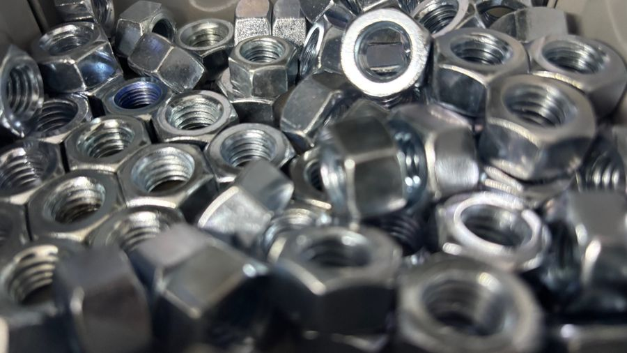
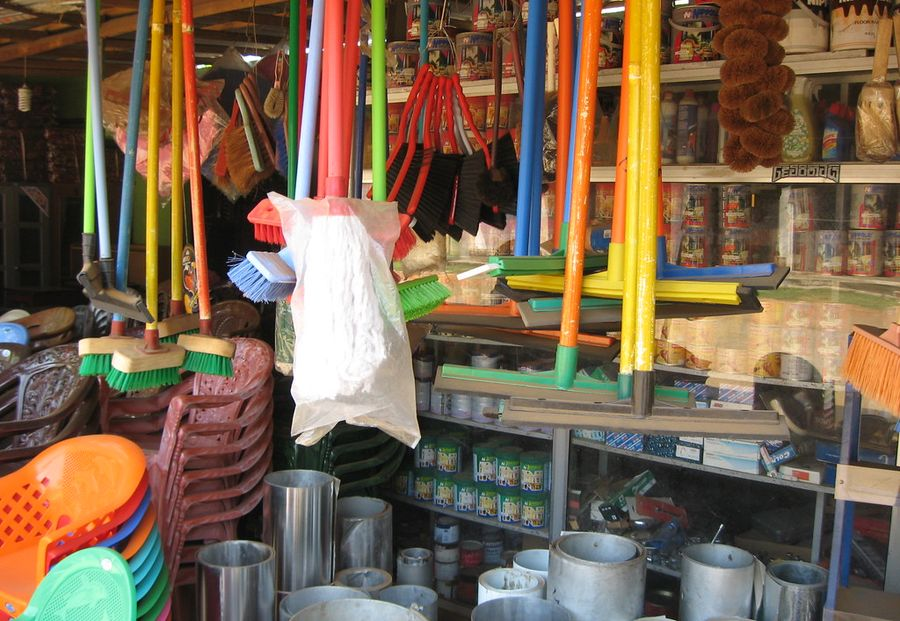

Reyonlar
Sekiz reyon, tek petek. Her reyonda bir nalburda en sık sorulan ürünleri ve malzemeyi doğru seçmenize yardım eden kısa rehberleri bulacaksınız. Ürünün yanındaki altıgene dokunursanız malzeme listenize eklenir.
- Hırdavat ve el aletleri
- Vida, dübel, cıvata
- Boya ve kimyasal
- Çimento ve yapı
- Elektrik
- Su tesisatı
- Kilit ve kapı
- Bahçe ve temizlik
Listelenen kalemler bir nalburda tipik olarak bulunan ürünlerdir. Stok, çeşit ve ölçü için sorun, bilgi verelim.
Hırdavat ve el aletleri
Evdeki tamir çantasının eksikleri burada tamamlanır: vurmak, sıkmak, ölçmek, kesmek ve delmek için gereken el aletleri ile sarf malzemeleri.
Sık sorulanlar
- Çekiç
- Tornavida takımı
- Pense
- Kargaburun
- Yan keski
- Ayarlı (İngiliz) anahtar
- Alyan anahtar takımı
- Şerit metre
- Su terazisi
- Maket bıçağı
- Matkap ucu
- Bits uç seti
- Zımpara kâğıdı
- Silikon tabancası
- İş eldiveni
- Koruyucu gözlük
 Temsili görsel
Temsili görsel
Tornavida ucu seçimi
Vida başına tam oturmayan uç kayar ve vida başını yalar. Ucun üzerindeki kısaltmaya bakın, vidanın başıyla karşılaştırın.
Uç boyutu da önemlidir: PH1, PH2 gibi numaralar uç büyüklüğünü gösterir. Ev işlerinde en çok PH2 kullanılır.
Hangi matkap ucu?
| Uç | Nerede | Nasıl tanınır |
|---|---|---|
| Beton ucu | Beton, tuğla, taş | Ucunda daha geniş, sert metal (karbür) plaka |
| Metal ucu | Demir, sac, alüminyum | Baştan sona aynı helis, sivri konik uç |
| Ahşap ucu | Ahşap, sunta, MDF | Ortasında iğne gibi sivri merkezleme ucu |
Fayans delerken önce darbe modunu kapatın; sırlı yüzeyde ucun kaymaması için üzerine maskeleme bandı yapıştırın.
Vida, dübel, cıvata
Bir rafın duvarda kalması, doğru dübel ile doğru vidanın buluşmasına bağlıdır. Duvar türünü ve asacağınız yükü seçin; genel kurala göre hangi dübelin uygun olduğunu görün.
Sık sorulanlar
- Plastik dübel
- Gazbeton dübeli
- Alçıpan dübeli
- Çelik dübel
- Kimyasal dübel
- Sunta vidası
- Ağaç vidası
- Matkap uçlu vida
- Cıvata
- Somun
- Pul ve yaylı pul
- Dişli çubuk (saplama)
- Kroşe
- Perçin
Ölçü nasıl okunur?
| Yazım | Anlamı |
|---|---|
| M8 × 60 | Metrik dişli cıvata: 8 mm diş çapı, 60 mm boy |
| 4 × 40 | Vida: 4 mm çap, 40 mm boy |
| 8'lik dübel | 8 mm çaplı dübel; 8 mm matkap ucu ister |
| Ø 6 | "Ø" çap işaretidir: 6 mm çap |
Cıvata alıyorsanız somununu ve pulunu da aynı diş çapında isteyin; M8 cıvataya M8 somun takılır.
Dübel seçici
Beton duvar ve orta yük için genellikle 8 mm plastik dübel kullanılır. Seçimlerinizi değiştirdikçe öneri güncellenir.
Bu araç genel kurala göre öneri verir. Duvarınızdan emin değilseniz delerken çıkan tozun rengine bakın (gri: beton, kırmızı: tuğla, beyaz: gazbeton ya da alçı) ya da bize sorun.

Temsili görselBoya ve yapı kimyasalları
İç ve dış cephe boyası, tavan boyası, astar, macun ve saten alçı; yanında rulo, fırça, bant ve naylon. Silikon ve mastik gibi yapı kimyasalları da bu reyonda.
Sık sorulanlar
- İç cephe boyası
- Dış cephe boyası
- Tavan boyası
- Astar
- Saten alçı
- Hazır macun
- Rulo ve boya tavası
- Fırça
- Maskeleme bandı
- Koruma naylonu
- Zımpara
- Spatula
- Silikon
- Akrilik mastik
- Vernik ve ahşap koruyucu
- Tiner
Boyamadan önce
- Yüzeyi hazırlayın
Tozu ve yağı alın; küflü yerleri önce temizleyin. Çatlak ve delikleri macun ya da saten alçıyla doldurup kuruyunca zımparalayın.
- Astar gerekir mi?
Yeni sıva ya da alçı yüzeyde ve koyu renkten açık renge geçerken astar kullanılması önerilir; boya daha düzgün tutar.
- Karıştırmayın
Su bazlı ve solvent bazlı boyaları birbirine karıştırmayın. İnceltme oranı için kutudaki talimata uyun.
- Aynı rengi bulmak için
Eski kutunun etiketini ya da renk kodunu fotoğraflayıp gönderin; etiket yoksa duvarın gün ışığında çekilmiş fotoğrafı yardımcı olur.
Boya hesaplayıcı
Odanın ölçülerini metre olarak yazın. Kapı ve pencere alanları otomatik düşülür (kapı 1,8 m2, pencere 1,5 m2 kabul edilir).
Ölçüleri girdiğinizde boyanacak alan ve yaklaşık litre burada görünür.
Çimento ve yapı malzemesi
Tadilatın torba işleri: çimento, sıva, alçı, seramik yapıştırıcısı ve derz dolgusu. Ne kadar lazım olduğunu ambalajdaki sarfiyat değeriyle aşağıda hesaplayabilirsiniz.
Sık sorulanlar
- Çimento
- Hazır sıva
- Kartonpiyer alçısı
- Seramik yapıştırıcısı
- Derz dolgusu
- Tamir harcı
- Su yalıtım malzemesi
- Sıva filesi
- Köşe profili
- Harç kovası
- Mala
- Kırıcı-delici uç
Hangi torba ne işe yarar?
| Ürün | Ne için |
|---|---|
| Çimento | Kum ve suyla harç ya da beton hazırlamak için bağlayıcı |
| Hazır sıva | Duvar yüzeyini düzeltmek; çoğunlukla yalnızca su eklenir |
| Saten alçı | Boya öncesi pürüzsüz son kat |
| Seramik yapıştırıcısı | Duvar ve zemin seramiğini yapıştırmak |
| Derz dolgusu | Seramik ve fayans aralarını doldurmak |
| Tamir harcı | Kırık köşe, oyuk ve çatlak onarımı |
Çimento ve harçla çalışırken eldiven ve gözlük kullanın; ıslak çimento cildi tahriş eder. Açılmış torbayı ağzını kapatıp kuru yerde saklayın.
Kaç torba lazım?
Her ürünün sarfiyatı farklıdır; ambalajın üzerinde "kg/m2" olarak yazar. O değeri ve torbanın ağırlığını girin.
Alanı, sarfiyatı ve torba ağırlığını girin; kaç torba gerektiğini hesaplayalım.
Torbayı doğru kullanmak
- Talimatı okuyun
Karışım oranı, su miktarı ve kullanım süresi ürüne göre değişir; torbanın üzerindeki talimat esastır.
- Azar azar karıştırın
Hazırlanan harç belli bir süre içinde kullanılmalıdır; bir seferde kullanabileceğiniz kadar karın.
Elektrik malzemesi
Kablo, priz, anahtar, sigorta ve aydınlatma. Çoğu zaman eski parçanın fotoğrafı ya da üzerindeki yazı, doğru ürünü bulmaya yeter.
Sık sorulanlar
- Kablo
- Priz
- Anahtar
- Çerçeve
- Otomatik sigorta
- Kaçak akım rölesi
- Duy
- LED ampul
- Spot ampul (GU10)
- Uzatma kablosu
- Grup priz
- Buat
- Kablo kanalı
- Klemens
- İzole bant
- Kontrol kalemi
Önce güvenlik. Çalışmadan önce ilgili sigortayı kapatın ve kontrol kalemiyle enerjinin kesildiğini doğrulayın. Tesisat işini, özellikle yeni hat çekmeyi, yetkili elektrikçiye yaptırın.
Kablo kesiti
| Hat | Evlerde yaygın kesit |
|---|---|
| Aydınlatma (lamba, anahtar) | 1,5 mm2 |
| Genel kullanım prizleri | 2,5 mm2 |
| Fırın, ocak gibi yüksek güçlü cihazlar | 4 mm2 ve üzeri |
Doğru kesit; hattın uzunluğuna, sigorta değerine ve cihazın gücüne göre değişir. Cihaz kılavuzuna bakın, elektrikçinize danışın.
Ampul duyları ve ışık rengi
| Renk sıcaklığı | Işık |
|---|---|
| 2700–3000 K | Sıcak, sarımsı ışık |
| 4000 K | Doğal beyaz ışık |
| 6500 K | Soğuk, mavimsi beyaz ışık |
Eski ampulün üzerindeki duy tipini, watt ve K değerini fotoğraflayıp gönderin; aynı ışığı bulmak kolaylaşır.
Su tesisatı
Musluk, batarya, ara musluk, flex hortum, boru ve bağlantı parçaları. Tesisatta en çok karışan şey ölçüdür; aşağıdaki tablo inç ile milimetreyi eşleştirir.
Sık sorulanlar
- Musluk
- Batarya
- Ara musluk (küresel vana)
- Flex hortum
- Teflon bant
- Keten ve macun
- Conta takımı
- PPR boru
- Rakor
- Dirsek ve te
- Nipel ve manşon
- PVC atık su borusu
- Sifon
- Klozet iç takımı
- Duş başlığı ve hortumu
- Batarya kartuşu
Sızıntıda ilk iş: Ara musluğu ya da sayacın yanındaki ana vanayı kapatın. Sonra sızan bağlantının ve üzerindeki parçanın fotoğrafını çekin.
İnç ve milimetre
| İnç | Anma çapı | Diş dış çapı | Karşılık PPR boru |
|---|---|---|---|
| 3/8" | DN10 | ≈ 16,7 mm | – |
| 1/2" | DN15 | ≈ 21 mm | 20 mm |
| 3/4" | DN20 | ≈ 26,4 mm | 25 mm |
| 1" | DN25 | ≈ 33,2 mm | 32 mm |
Dişli bağlantılar inçle, PPR borular dış çapla (mm) anılır. "Yarım parmak" denilen ölçü 1/2"dir. Kesin ölçü için parçanın dişli ağzını kumpasla ölçün ya da eskisini getirin.
Teflon bant nasıl sarılır?
Dişli parçaya ucundan bakarken bandı saat yönünde, yani sıkma yönünde sarın; ters sarılan bant sıkarken açılır. İlk dişi boş bırakmak bandın borunun içine kaçmasını önler.
Kilit ve kapı donanımı
Barel, kapı kilidi, kapı kolu, menteşe ve asma kilit. Barel değiştirecekseniz önce ölçüsünü alın; ölçmek iki dakikanızı alır.
Sık sorulanlar
- Barel
- Kapı kilidi
- Kapı kolu
- Asma kilit
- Menteşe
- Kapı stoperi
- Kapı dürbünü
- Dolap kilidi
- Sürgü
- Kapı kapatıcı
- Kilit yağlayıcı sprey
- Dolap kulpu
Barel nasıl ölçülür?
- Kapıyı açın. Kapının kenarındaki kilit sacında, barel hizasındaki uzun vidayı sökün.
- Anahtarı takıp hafifçe çevirin; dil gövdeye girdiğinde bareli dışarı doğru çekin.
- Vida deliğinin ortasından barelin iki ucuna kadar ölçün: dış taraf A, iç taraf B. Ölçü "A/B" diye yazılır, örneğin 30/40.
- Yeni bareli aynı şekilde takın, vidayı sıkın ve kapı açıkken anahtarla deneyin.
İki ölçü eşit olmayabilir; dış tarafın kapı yüzeyinden çok taşmaması güvenlik açısından tercih edilir. Emin değilseniz eski bareli getirin.
Bahçe ve temizlik
Hortum ve bağlantı parçalarından kürek ve tırmığa, süpürgeden kovaya: bahçenin, balkonun ve evin temizlik malzemesi.
Sık sorulanlar
- Bahçe hortumu
- Musluk rakoru
- Hortum bağlantı parçası
- Sulama tabancası
- Hortum kelepçesi
- Kürek
- Tırmık
- Budama makası
- Süpürge
- Faraş
- Kova
- Paspas ve çekpas
- Çöp torbası
- İş eldiveni

Temsili görselHortum ve rakor ölçüsü
- Hortum iç çapıyla anılır
Bahçe hortumlarında 1/2" ve 3/4" yaygındır. Hortum, rakor ve bağlantı parçasının ölçüsü aynı olmalı.
- Musluğa göre rakor
Dişli musluk ağzında rakor musluğun diş ölçüsüne göre seçilir. Emin değilseniz musluğun fotoğrafını gönderin.
- Kışa hazırlık
Dondurucu soğuklardan önce dış musluklardaki suyu boşaltın; donan su boruyu ve musluğu çatlatabilir. Hortumu boşaltıp sarılı saklayın.
Eklediklerinizi tek mesajda sorun.
Reyonlarda altıgene dokunduğunuz her ürün malzeme listenizde. Adetleri düzenleyin, mesajı görün ve WhatsApp'tan gönderin.